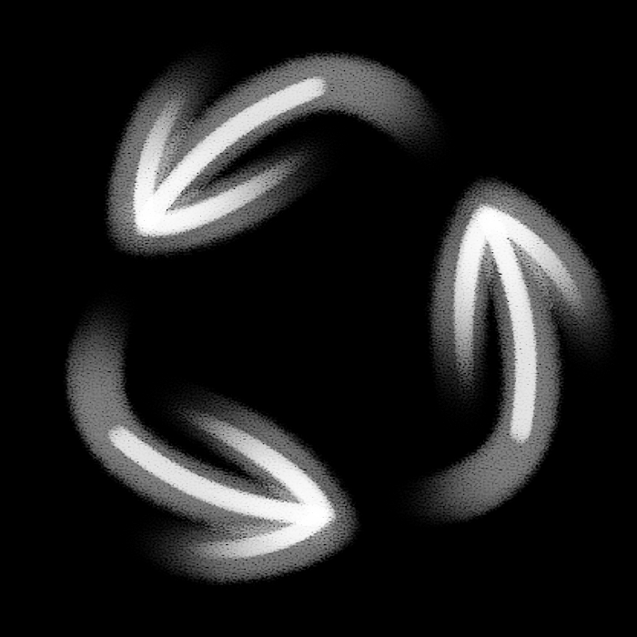

EXHALE
by
hinahina gray

For Native Hawaiians - Kanaka Maoli - Mana can be gained and lost.
It can be inherited, tainted, made greater and more sacred.
It is shared, and taken, in the form of Breath.
Hā, Breath, Life, all three are the same.
hope